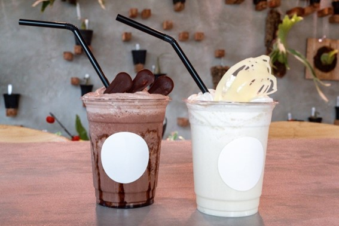

包容力抜群の万能聞き上手男子になる秘訣
こんにちは！Men’s Date+ アパレル系ライターのあおいです！
突然ですが、おしゃべりが好きな人、挙手！笑
大好きな人にはうれしかったことも、かなしかったことも、たのしかったことも、おもしろかったこともぜーんぶ聞いてほしい。
そんな風に思ってる女子、結構多いんじゃないかな。
そんなわけで今日はMen’s Date+読者のみなさんを聞き上手男子にしちゃいますよー。
楽しい会話であの子に「もっと話したい！」と思わせられたらこっちのもん！
ぜひ、さいごまで読んでいってくださいね。
1.相手の言葉をくりかえす
「こないだ店長が、せっかくあたしがきれいに配列した商品ぐちゃぐちゃにしちゃってさ、謝ってくれないし、ぜんぶあたしがなおしたんだよー、ひどくない？」
2. 感謝やねぎらいの言葉を冒頭に
なんて話を聞いたら、あなたなら何と答えますか？
「へー、そんなことがあったんだ、大変だね」「うわぁ、いやだね、めんどくさそう」 どちらも素直な感想で、全く問題はないのですが、たとえば
「え、謝ってくれないの？それはひどいね」 と返してくれると、より話を聞いてくれている感があるんです。
それは相手のことばを反復しているから。
単純だと思うかもしれませんが、自分とおなじことばを発する人には親近感をもちますよね。自分と同じ動作をする人を身近に感じるのはミラーリングなんていって心理学でも有名な現象です。
おなじ出来事でも人によって感じ方はさまざま。
でもまずは同じことばを返してあげることで
「わたしと同じ視点に立って、同じ感じ方をしてくれた！」という印象を相手に与えることができます。
なんとなく「味方になってくれている」感じがしませんか？
味方になってくれる人を嫌いな人はいませんよね。
もちろん、自分の感じたことを素直に伝えるのが一番なので
思ってもないことばかり言う必要はありませんが、一種のテクニックだと思って
まずは同じ立場に立ち、同じことばで話してみましょう。
2．話をさえぎらない
おしゃべり好きさんは「この話をしたい！」という話題があらかじめ頭の中にあるタイプもいます。
そんなタイプにとって一番ストレスなのが話をさえぎられて話題がそれてしまうこと。
相手の発言を勝手に解釈して「あ～こういうことだね」とまとめたり、自分の話すターンにもちこんでしまったりすると相手は意図したことが話せずもやもやしてしまいます。
もちろん、自分の話をしてもいいですが、相手に話してもらうことを意識しておきましょう。
理想は自分:相手＝2:8なんて言いますが、カップルや友達だったら4:6くらいがベストかなと思います。個人的には。
3．Yes・Noで答えられない質問をする
たとえば「仕事大変？」とか「スタバの新作飲んだ？」とかってYesかNoでさくっと答えられちゃいますよね。
聞き下手さんはこの手の質問を連発しがち。
YesやNoの先にもそれなりの話の展開はありますが、
相手から得る情報が少なすぎてどうしても会話を広げにくくなります。
「あ、そうなんだー飲んだんだー、へー、おいしかった？」とか言いながら
Yes・No質問の無限ループに突入し、なんとなくもありあがらない時間が続きます。
わたしも緊張すると何とか場をつなごうと必死になることがあるので気持ちはめちゃくちゃわかるのですが、話し手としては目的の見えない質問を連発されるとなんとなく居心地が悪いもの。
不自然だし、ほんとに興味あるのかなって感じもします。
そんなときには「Yes・Noで答えられない質問をする」ことを意識してみて。
「仕事、最近はどういうことをしてるの？」とか「スタバでいちばん好きなドリンクなに？」とか相手が少しだけ考えて具体的な返事をくれるような質問をしてみましょう。
これだけでも会話が広がりやすくなりますよ！
会話の中に「考える時間」をつくることで話すスピードがちょっとゆっくりになるし
焦らずにお互いのことを伝えられるので、おすすめです。
4．聞いてばかりも良くない
聞き上手ってただやみくもに聞いてばかりの人ではありません。
ほんとうに聞くことしかしていないと、あいづちもワンパターンになって
「あーこの人ちゃんと聞いていないんだなー」というのがめちゃくちゃわかりやすく伝わってしまいます。
だいじなのは共感できるポイントを見つけて「自分が相手の立場でも同じ気持ちになっていただろう」と、ときどき伝えること。
ちょっとむずかしい言い方になりましたが要は相手の「でしょー？わかるでしょー？」を引き出したいわけです。
「うわーそれおれが○○ちゃんだったらキツかったわー」
って言ってくれたら
「でしょー？ほーんとキツかったんだから！」て返したくなりますよね。
同じ立場に立って考えてくれてるって結構うれしい！
相手の話を上手にのせてあげて、次へつなぐいい橋渡しになりますよー！やってみてね。
5. さいごに
聞き上手、永遠のテーマですよね。
おしゃべりな関西人であるわたしはついついたくさんしゃべりたくなっちゃいます。
「自分のこともっと知ってほしい」という気持ちは誰にでもあるもの。
そんな気持ちにこたえてくれる人はとても素敵だし、話していて楽しいと感じられると
かなりいいリフレッシュになります。
いまどきの女子たちは聞き上手癒し系男子を求めているハズ…！
ぜひ、実践してみてね。